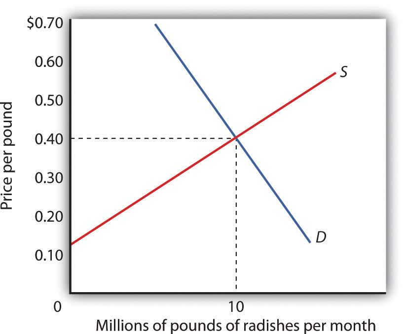
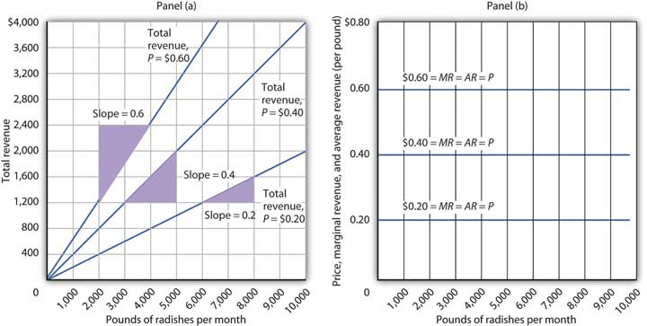
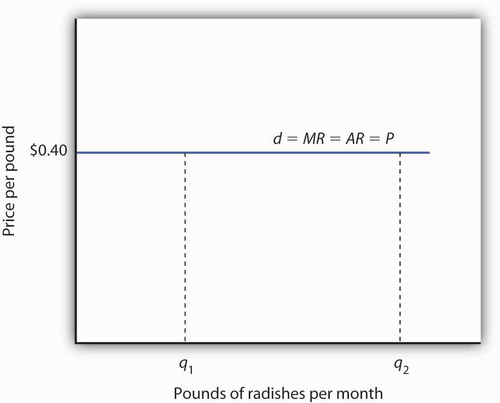
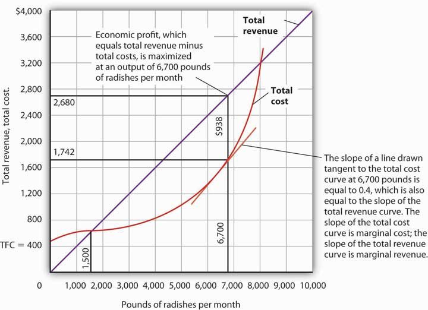
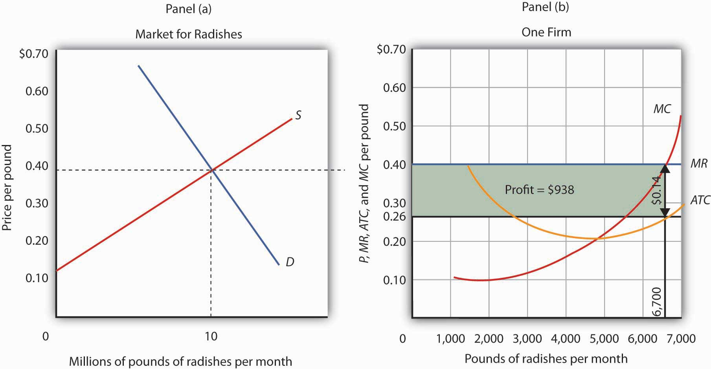
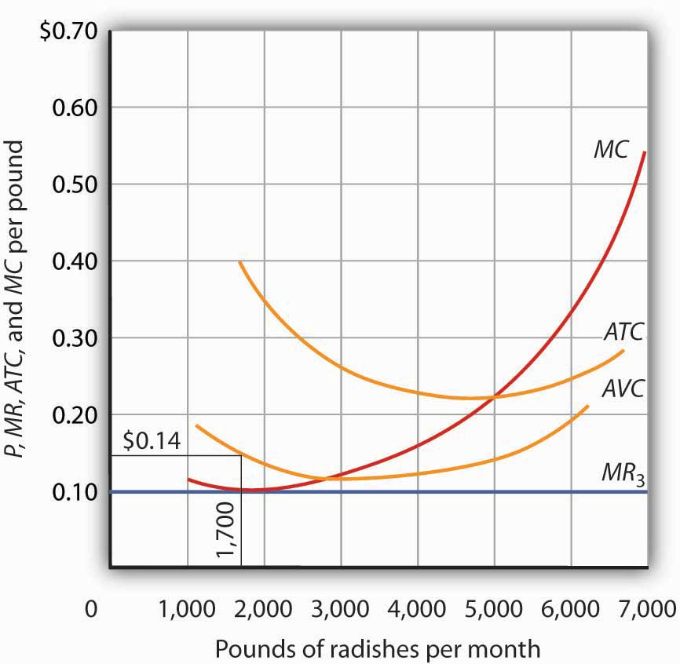
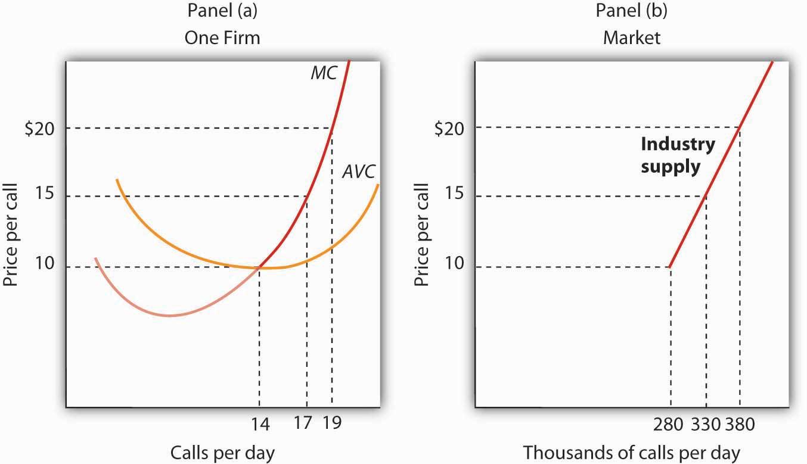

Our goal in this section is to see how a firm in a perfectly competitive market determines its output level in the short run—a planning period in which at least one factor of production is fixed in quantity. We shall see that the firm can maximize economic profit by applying the marginal decision rule and increasing output up to the point at which the marginal benefit of an additional unit of output is just equal to the marginal cost. This fact has an important implication: over a wide range of output, the firm’s marginal cost curve is its supply curve.
Each firm in a perfectly competitive market is a price taker; the equilibrium price and industry output are determined by demand and supply. Figure 9.1 "The Market for Radishes" shows how demand and supply in the market for radishes, which we shall assume are produced under conditions of perfect competition, determine total output and price. The equilibrium price is $0.40 per pound; the equilibrium quantity is 10 million pounds per month.
Figure 9.1 The Market for Radishes
Price and output in a competitive market are determined by demand and supply. In the market for radishes, the equilibrium price is $0.40 per pound; 10 million pounds per month are produced and purchased at this price.
Because it is a price taker, each firm in the radish industry assumes it can sell all the radishes it wants at a price of $0.40 per pound. No matter how many or how few radishes it produces, the firm expects to sell them all at the market price.
The assumption that the firm expects to sell all the radishes it wants at the market price is crucial. If a firm did not expect to sell all of its radishes at the market price—if it had to lower the price to sell some quantities—the firm would not be a price taker. And price-taking behavior is central to the model of perfect competition.
Radish growers—and perfectly competitive firms in general—have no reason to charge a price lower than the market price. Because buyers have complete information and because we assume each firm’s product is identical to that of its rivals, firms are unable to charge a price higher than the market price. For perfectly competitive firms, the price is very much like the weather: they may complain about it, but in perfect competition there is nothing any of them can do about it.
While a firm in a perfectly competitive market has no influence over its price, it does determine the output it will produce. In selecting the quantity of that output, one important consideration is the revenue the firm will gain by producing it.
A firm’s total revenueA firm’s output multiplied by the price at which it sells that output. is found by multiplying its output by the price at which it sells that output. For a perfectly competitive firm, total revenue (TR) is the market price (P) times the quantity the firm produces (Q), or
Equation 9.1
The relationship between market price and the firm’s total revenue curve is a crucial one. Panel (a) of Figure 9.2 "Total Revenue, Marginal Revenue, and Average Revenue" shows total revenue curves for a radish grower at three possible market prices: $0.20, $0.40, and $0.60 per pound. Each total revenue curve is a linear, upward-sloping curve. At any price, the greater the quantity a perfectly competitive firm sells, the greater its total revenue. Notice that the greater the price, the steeper the total revenue curve is.
Figure 9.2 Total Revenue, Marginal Revenue, and Average Revenue
Panel (a) shows different total revenue curves for three possible market prices in perfect competition. A total revenue curve is a straight line coming out of the origin. The slope of a total revenue curve is MR; it equals the market price (P) and AR in perfect competition. Marginal revenue and average revenue are thus a single horizontal line at the market price, as shown in Panel (b). There is a different marginal revenue curve for each price.
The slope of a total revenue curve is particularly important. It equals the change in the vertical axis (total revenue) divided by the change in the horizontal axis (quantity) between any two points. The slope measures the rate at which total revenue increases as output increases. We can think of it as the increase in total revenue associated with a 1-unit increase in output. The increase in total revenue from a 1-unit increase in quantity is marginal revenueThe increase in total revenue from a one-unit increase in quantity.. Thus marginal revenue (MR) equals the slope of the total revenue curve.
How much additional revenue does a radish producer gain from selling one more pound of radishes? The answer, of course, is the market price for 1 pound. Marginal revenue equals the market price. Because the market price is not affected by the output choice of a single firm, the marginal revenue the firm gains by producing one more unit is always the market price. The marginal revenue curve shows the relationship between marginal revenue and the quantity a firm produces. For a perfectly competitive firm, the marginal revenue curve is a horizontal line at the market price. If the market price of a pound of radishes is $0.40, then the marginal revenue is $0.40. Marginal revenue curves for prices of $0.20, $0.40, and $0.60 are given in Panel (b) of Figure 9.2 "Total Revenue, Marginal Revenue, and Average Revenue". In perfect competition, a firm’s marginal revenue curve is a horizontal line at the market price.
Price also equals average revenueTotal revenue divided by quantity., which is total revenue divided by quantity. Equation 9.1 gives total revenue, TR. To obtain average revenue (AR), we divide total revenue by quantity, Q. Because total revenue equals price (P) times quantity (Q), dividing by quantity leaves us with price.
Equation 9.2
The marginal revenue curve is a horizontal line at the market price, and average revenue equals the market price. The average and marginal revenue curves are given by the same horizontal line. This is consistent with what we have learned about the relationship between marginal and average values. When the marginal value exceeds the average value, the average value will be rising. When the marginal value is less than the average value, the average value will be falling. What happens when the average and marginal values do not change, as in the horizontal curves of Panel (b) of Figure 9.2 "Total Revenue, Marginal Revenue, and Average Revenue"? The marginal value must equal the average value; the two curves coincide.
We have seen that a perfectly competitive firm’s marginal revenue curve is simply a horizontal line at the market price and that this same line is also the firm’s average revenue curve. For the perfectly competitive firm, . The marginal revenue curve has another meaning as well. It is the demand curve facing a perfectly competitive firm.
Consider the case of a single radish producer, Tony Gortari. We assume that the radish market is perfectly competitive; Mr. Gortari runs a perfectly competitive firm. Suppose the market price of radishes is $0.40 per pound. How many pounds of radishes can Mr. Gortari sell at this price? The answer comes from our assumption that he is a price taker: He can sell any quantity he wishes at this price. How many pounds of radishes will he sell if he charges a price that exceeds the market price? None. His radishes are identical to those of every other firm in the market, and everyone in the market has complete information. That means the demand curve facing Mr. Gortari is a horizontal line at the market price as illustrated in Figure 9.3 "Price, Marginal Revenue, and Demand". Notice that the curve is labeled d to distinguish it from the market demand curve, D, in Figure 9.1 "The Market for Radishes". The horizontal line in Figure 9.3 "Price, Marginal Revenue, and Demand" is also Mr. Gortari’s marginal revenue curve, MR, and his average revenue curve, AR. It is also the market price, P.
Of course, Mr. Gortari could charge a price below the market price, but why would he? We assume he can sell all the radishes he wants at the market price; there would be no reason to charge a lower price. Mr. Gortari faces a demand curve that is a horizontal line at the market price. In our subsequent analysis, we shall refer to the horizontal line at the market price simply as marginal revenue. We should remember, however, that this same line gives us the market price, average revenue, and the demand curve facing the firm.
Figure 9.3 Price, Marginal Revenue, and Demand
A perfectly competitive firm faces a horizontal demand curve at the market price. Here, radish grower Tony Gortari faces demand curve d at the market price of $0.40 per pound. He could sell q1 or q2—or any other quantity—at a price of $0.40 per pound.
More generally, we can say that any perfectly competitive firm faces a horizontal demand curve at the market price. We saw an example of a horizontal demand curve in the chapter on elasticity. Such a curve is perfectly elastic, meaning that any quantity is demanded at a given price.
A firm’s economic profit is the difference between total revenue and total cost. Recall that total cost is the opportunity cost of producing a certain good or service. When we speak of economic profit we are speaking of a firm’s total revenue less the total opportunity cost of its operations.
As we learned, a firm’s total cost curve in the short run intersects the vertical axis at some positive value equal to the firm’s total fixed costs. Total cost then rises at a decreasing rate over the range of increasing marginal returns to the firm’s variable factors. It rises at an increasing rate over the range of diminishing marginal returns. Figure 9.4 "Total Revenue, Total Cost, and Economic Profit" shows the total cost curve for Mr. Gortari, as well as the total revenue curve for a price of $0.40 per pound. Suppose that his total fixed cost is $400 per month. For any given level of output, Mr. Gortari’s economic profit is the vertical distance between the total revenue curve and the total cost curve at that level.
Figure 9.4 Total Revenue, Total Cost, and Economic Profit
Economic profit is the vertical distance between the total revenue and total cost curves (revenue minus costs). Here, the maximum profit attainable by Tony Gortari for his radish production is $938 per month at an output of 6,700 pounds.
Let us examine the total revenue and total cost curves in Figure 9.4 "Total Revenue, Total Cost, and Economic Profit" more carefully. At zero units of output, Mr. Gortari’s total cost is $400 (his total fixed cost); total revenue is zero. Total cost continues to exceed total revenue up to an output of 1,500 pounds per month, at which point the two curves intersect. At this point, economic profit equals zero. As Mr. Gortari expands output above 1,500 pounds per month, total revenue becomes greater than total cost. We see that at a quantity of 1,500 pounds per month, the total revenue curve is steeper than the total cost curve. Because revenues are rising faster than costs, profits rise with increased output. As long as the total revenue curve is steeper than the total cost curve, profit increases as the firm increases its output.
The total revenue curve’s slope does not change as the firm increases its output. But the total cost curve becomes steeper and steeper as diminishing marginal returns set in. Eventually, the total cost and total revenue curves will have the same slope. That happens in Figure 9.4 "Total Revenue, Total Cost, and Economic Profit" at an output of 6,700 pounds of radishes per month. Notice that a line drawn tangent to the total cost curve at that quantity has the same slope as the total revenue curve.
As output increases beyond 6,700 pounds, the total cost curve continues to become steeper. It becomes steeper than the total revenue curve, and profits fall as costs rise faster than revenues. At an output slightly above 8,000 pounds per month, the total revenue and cost curves intersect again, and economic profit equals zero. Mr. Gortari achieves the greatest profit possible by producing 6,700 pounds of radishes per month, the quantity at which the total cost and total revenue curves have the same slope. More generally, we can conclude that a perfectly competitive firm maximizes economic profit at the output level at which the total revenue curve and the total cost curve have the same slope.
The slope of the total revenue curve is marginal revenue; the slope of the total cost curve is marginal cost. Economic profit, the difference between total revenue and total cost, is maximized where marginal revenue equals marginal cost. This is consistent with the marginal decision rule, which holds that a profit-maximizing firm should increase output until the marginal benefit of an additional unit equals the marginal cost. The marginal benefit of selling an additional unit is measured as marginal revenue. Finding the output at which marginal revenue equals marginal cost is thus an application of our marginal decision rule.
Figure 9.5 "Applying the Marginal Decision Rule" shows how a firm can use the marginal decision rule to determine its profit-maximizing output. Panel (a) shows the market for radishes; the market demand curve (D), and supply curve (S) that we had in Figure 9.1 "The Market for Radishes"; the market price is $0.40 per pound. In Panel (b), the MR curve is given by a horizontal line at the market price. The firm’s marginal cost curve (MC) intersects the marginal revenue curve at the point where profit is maximized. Mr. Gortari maximizes profits by producing 6,700 pounds of radishes per month. That is, of course, the result we obtained in Figure 9.4 "Total Revenue, Total Cost, and Economic Profit", where we saw that the firm’s total revenue and total cost curves differ by the greatest amount at the point at which the slopes of the curves, which equal marginal revenue and marginal cost, respectively, are equal.
Figure 9.5 Applying the Marginal Decision Rule
The market price is determined by the intersection of demand and supply. As always, the firm maximizes profit by applying the marginal decision rule. It takes the market price, $0.40 per pound, as given and selects an output at which MR equals MC. Economic profit per unit is the difference between ATC and price (here, $0.14 per pound); economic profit is profit per unit times the quantity produced ($0.14 × 6,700 = $938).
We can use the graph in Figure 9.5 "Applying the Marginal Decision Rule" to compute Mr. Gortari’s economic profit. Economic profit per unitThe difference between price and average total cost. is the difference between price and average total cost. At the profit-maximizing output of 6,700 pounds of radishes per month, average total cost (ATC) is $0.26 per pound, as shown in Panel (b). Price is $0.40 per pound, so economic profit per unit is $0.14. Economic profit is found by multiplying economic profit per unit by the number of units produced; the firm’s economic profit is thus $938 ($0.14 × 6,700). It is shown graphically by the area of the shaded rectangle in Panel (b); this area equals the vertical distance between marginal revenue (MR) and average total cost (ATC) at an output of 6,700 pounds of radishes times the number of pounds of radishes produced, 6,700, in Figure 9.5 "Applying the Marginal Decision Rule".
Look carefully at the rectangle that shows economic profit in Panel (b) of Figure 9.5 "Applying the Marginal Decision Rule". It is found by taking the profit-maximizing quantity, 6,700 pounds, then reading up to the ATC curve and the firm’s demand curve at the market price. Economic profit per unit equals price minus average total cost (P − ATC).
The firm’s economic profit equals economic profit per unit times the quantity produced. It is found by extending horizontal lines from the ATC and MR curve to the vertical axis and taking the area of the rectangle formed.
There is no reason for the profit-maximizing quantity to correspond to the lowest point on the ATC curve; it does not in this case. Students sometimes make the mistake of calculating economic profit as the difference between the price and the lowest point on the ATC curve. That gives us the maximum economic profit per unit, but we assume that firms maximize economic profit, not economic profit per unit. The firm’s economic profit equals economic profit per unit times quantity. The quantity that maximizes economic profit is determined by the intersection of ATC and MR.
In the short run, a firm has one or more inputs whose quantities are fixed. That means that in the short run the firm cannot leave its industry. Even if it cannot cover all of its costs, including both its variable and fixed costs, going entirely out of business is not an option in the short run. The firm may close its doors, but it must continue to pay its fixed costs. It is forced to accept an economic lossThe amount by which a firm’s total cost exceeds its total revenue., the amount by which its total cost exceeds its total revenue.
Suppose, for example, that a manufacturer has signed a 1-year lease on some equipment. It must make payments for this equipment during the term of its lease, whether it produces anything or not. During the period of the lease, the payments represent a fixed cost for the firm.
A firm that is experiencing economic losses—whose economic profits have become negative—in the short run may either continue to produce or shut down its operations, reducing its output to zero. It will choose the option that minimizes its losses. The crucial test of whether to operate or shut down lies in the relationship between price and average variable cost.
Suppose the demand for radishes falls to D2, as shown in Panel (a) of Figure 9.6 "Suffering Economic Losses in the Short Run". The market price for radishes plunges to $0.18 per pound, which is below average total cost. Consequently Mr. Gortari experiences negative economic profits—a loss. Although the new market price falls short of average total cost, it still exceeds average variable cost, shown in Panel (b) as AVC. Therefore, Mr. Gortari should continue to produce an output at which marginal cost equals marginal revenue. These curves (labeled MC and MR2) intersect in Panel (b) at an output of 4,444 pounds of radishes per month.
Figure 9.6 Suffering Economic Losses in the Short Run

Tony Gortari experiences a loss when price drops below ATC, as it does in Panel (b) as a result of a reduction in demand. If price is above AVC, however, he can minimize his losses by producing where MC equals MR2. Here, that occurs at an output of 4,444 pounds of radishes per month. The price is $0.18 per pound, and average total cost is $0.23 per pound. He loses $0.05 per pound, or $222.20 per month.
When producing 4,444 pounds of radishes per month, Mr. Gortari faces an average total cost of $0.23 per pound. At a price of $0.18 per pound, he loses a nickel on each pound produced. Total economic losses at an output of 4,444 pounds per month are thus $222.20 per month (=4,444×$0.05).
No producer likes a loss (that is, negative economic profit), but the loss solution shown in Figure 9.6 "Suffering Economic Losses in the Short Run" is the best Mr. Gortari can attain. Any level of production other than the one at which marginal cost equals marginal revenue would produce even greater losses.
Suppose Mr. Gortari were to shut down and produce no radishes. Ceasing production would reduce variable costs to zero, but he would still face fixed costs of $400 per month (recall that $400 was the vertical intercept of the total cost curve in Figure 9.4 "Total Revenue, Total Cost, and Economic Profit"). By shutting down, Mr. Gortari would lose $400 per month. By continuing to produce, he loses only $222.20.
Mr. Gortari is better off producing where marginal cost equals marginal revenue because at that output price exceeds average variable cost. Average variable cost is $0.14 per pound, so by continuing to produce he covers his variable costs, with $0.04 per pound left over to apply to fixed costs. Whenever price is greater than average variable cost, the firm maximizes economic profit (or minimizes economic loss) by producing the output level at which marginal revenue and marginal cost curves intersect.
Suppose price drops below a firm’s average variable cost. Now the best strategy for the firm is to shut down, reducing its output to zero. The minimum level of average variable cost, which occurs at the intersection of the marginal cost curve and the average variable cost curve, is called the shutdown pointThe minimum level of average variable cost, which occurs at the intersection of the marginal cost curve and the average variable cost curve.. Any price below the minimum value of average variable cost will cause the firm to shut down. If the firm were to continue producing, not only would it lose its fixed costs, but it would also face an additional loss by not covering its variable costs.
Figure 9.7 "Shutting Down" shows a case where the price of radishes drops to $0.10 per pound. Price is less than average variable cost, so Mr. Gortari not only would lose his fixed cost but would also incur additional losses by producing. Suppose, for example, he decided to operate where marginal cost equals marginal revenue, producing 1,700 pounds of radishes per month. Average variable cost equals $0.14 per pound, so he would lose $0.04 on each pound he produces ($68) plus his fixed cost of $400 per month. He would lose $468 per month. If he shut down, he would lose only his fixed cost. Because the price of $0.10 falls below his average variable cost, his best course would be to shut down.
Figure 9.7 Shutting Down
The market price of radishes drops to $0.10 per pound, so MR3 is below Mr. Gortari’s AVC. Thus he would suffer a greater loss by continuing to operate than by shutting down. Whenever price falls below average variable cost, the firm will shut down, reducing its production to zero.
Shutting down is not the same thing as going out of business. A firm shuts down by closing its doors; it can reopen them whenever it expects to cover its variable costs. We can even think of a firm’s decision to close at the end of the day as a kind of shutdown point; the firm makes this choice because it does not anticipate that it will be able to cover its variable cost overnight. It expects to cover those costs the next morning when it reopens its doors.
In the model of perfect competition, we assume that a firm determines its output by finding the point where the marginal revenue and marginal cost curves intersect. Provided that price exceeds average variable cost, the firm produces the quantity determined by the intersection of the two curves.
A supply curve tells us the quantity that will be produced at each price, and that is what the firm’s marginal cost curve tells us. The firm’s supply curve in the short run is its marginal cost curve for prices above the average variable cost. At prices below average variable cost, the firm’s output drops to zero.
Panel (a) of Figure 9.8 "Marginal Cost and Supply" shows the average variable cost and marginal cost curves for a hypothetical astrologer, Madame LaFarge, who is in the business of providing astrological consultations over the telephone. We shall assume that this industry is perfectly competitive. At any price below $10 per call, Madame LaFarge would shut down. If the price is $10 or greater, however, she produces an output at which price equals marginal cost. The marginal cost curve is thus her supply curve at all prices greater than $10.
Figure 9.8 Marginal Cost and Supply
The supply curve for a firm is that portion of its MC curve that lies above the AVC curve, shown in Panel (a). To obtain the short-run supply curve for the industry, we add the outputs of each firm at each price. The industry supply curve is given in Panel (b).
Now suppose that the astrological forecast industry consists of Madame LaFarge and thousands of other firms similar to hers. The market supply curve is found by adding the outputs of each firm at each price, as shown in Panel (b) of Figure 9.8 "Marginal Cost and Supply". At a price of $10 per call, for example, Madame LaFarge supplies 14 calls per day. Adding the quantities supplied by all the other firms in the market, suppose we get a quantity supplied of 280,000. Notice that the market supply curve we have drawn is linear; throughout the book we have made the assumption that market demand and supply curves are linear in order to simplify our analysis.
Looking at Figure 9.8 "Marginal Cost and Supply", we see that profit-maximizing choices by firms in a perfectly competitive market will generate a market supply curve that reflects marginal cost. Provided there are no external benefits or costs in producing a good or service, a perfectly competitive market satisfies the efficiency condition.
Assume that Acme Clothing, the firm introduced in the chapter on production and cost, produces jackets in a perfectly competitive market. Suppose the demand and supply curves for jackets intersect at a price of $81. Now, using the marginal cost and average total cost curves for Acme shown here:
Estimate Acme’s profit-maximizing output per day (assume the firm selects a whole number). What are Acme’s economic profits per day?
The 66 satellites were poised to start falling from the sky. The hope was that the pieces would burn to bits on their way down through the atmosphere, but there was the chance that a building or a person would take a direct hit.
The satellites were the primary communication devices of Iridium’s satellite phone system. Begun in 1998 as the first truly global satellite system for mobile phones—providing communications across deserts, in the middle of oceans, and at the poles—Iridium expected five million subscribers to pay $7 a minute to talk on $3,000 handsets. In the climate of the late 1990s, users opted for cheaper, though less secure and less comprehensive, cell phones. By the end of the decade, Iridium had declared bankruptcy, shut down operations, and was just waiting for the satellites to start plunging from their orbits around 2007.
The only offer for Iridium’s $5 billion system came from an ex-CEO of a nuclear reactor business, Dan Colussy, and it was for a measly $25 million. “It’s like picking up a $150,000 Porsche 911 for $750,” wrote USA Today reporter, Kevin Maney.
The purchase turned into a bonanza. In the wake of September 11, 2001, and then the wars in Afghanistan and Iraq, demand for secure communications in remote locations skyrocketed. New customers included the U.S. and British militaries, as well as reporters in Iraq, who, when traveling with the military have been barred from using less secure systems that are easier to track. The nonprofit organization Operation Call Home has bought time to allow members of the 81st Armor Brigade of the Washington National Guard to communicate with their families at home. Airlines and shipping lines have also signed up.
As the new Iridium became unburdened from the debt of the old one and technology improved, the lower fixed and variable costs have contributed to Iridium’s revival, but clearly a critical element in the turnaround has been increased demand. The launching of an additional seven spare satellites and other tinkering have extended the life of the system to at least 2014. The firm was temporarily shut down but, with its new owners and new demand for its services, has come roaring back.
Why did Colussy buy Iridium? A top executive in the new firm said that Colussy just found the elimination of the satellites a terrible waste. Perhaps he had some niche uses in mind, as even before September 11, 2001, he had begun to enroll some new customers, such as the Colombian national police, who no doubt found the system useful in the fighting drug lords. But it was in the aftermath of 9/11 that its subscriber list really began to grow and its re-opening was deemed a stroke of genius. Today Iridium’s customers include ships at sea (which account for about half of its business), airlines, military uses, and a variety of commercial and humanitarian applications.
Sources: Kevin Maney, “Remember Those ‘Iridium’s Going to Fail’ Jokes? Prepare to Eat Your Hat,” USA Today, April 9, 2003: p. 3B. Michael Mecham, “Handheld Comeback: A Resurrected Iridium Counts Aviation, Antiterrorism Among Its Growth Fields,” Aviation Week and Space Technology, 161: 9 (September 6, 2004): p. 58. Iridium’s webpage can be found at Iridium.com.
At a price of $81, Acme’s marginal revenue curve is a horizontal line at $81. The firm produces the output at which marginal cost equals marginal revenue; the curves intersect at a quantity of 9 jackets per day. Acme’s average total cost at this level of output equals $67, for an economic profit per jacket of $14. Acme’s economic profit per day equals about $126.